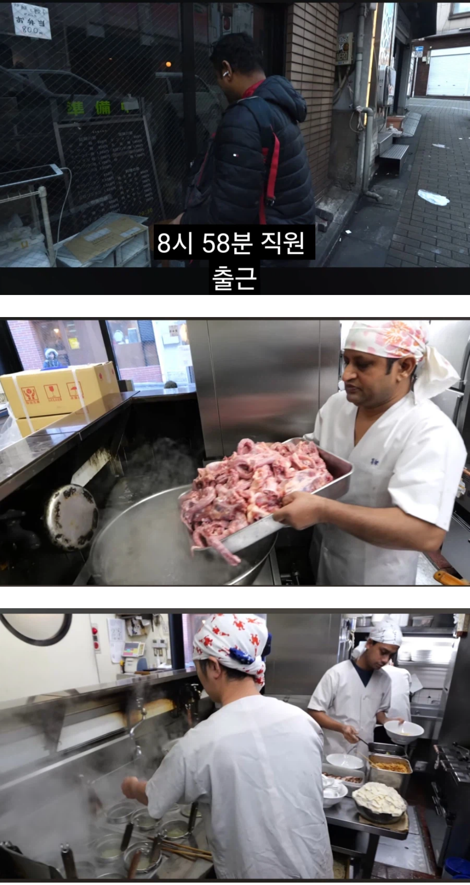

https://bbs.ruliweb.com/best/board/300143/read/76361976

사장 가족 빼고는 전부 외노자
좁은곳에서 일하는데 업무강도는 높아서
사람 구하기 힘들지만
이젠 배우려고 수행하러 오는 사람도 없는듯
한국도 주방에서 일하는 사람은 대부분 외노자들이 많음
툭히 배달전문 식당은 90%
https://bbs.ruliweb.com/best/board/300143/read/76361976

사장 가족 빼고는 전부 외노자
좁은곳에서 일하는데 업무강도는 높아서
사람 구하기 힘들지만
이젠 배우려고 수행하러 오는 사람도 없는듯
한국도 주방에서 일하는 사람은 대부분 외노자들이 많음
툭히 배달전문 식당은 90%
댓글
수집 당시 댓글 39개
상냥개붕이 · 2 일 전
지인 식당에서 알바 공고올리면 외국인이 많이 지원한다더라
Blueoil · 2 일 전
요즘 일본 외노자 개많긴 하더라
싸우지않기 · 2 일 전
어쩔 수 없음. 우리도 자국민 기피직업군도 많고, 고령화되고 인구가 천장찍고 내려가는중이라, 지금 있는 여러 인프라나 사업을 유지하려면 사람을 계속 데려오는 수 밖에 없음...
수베루베 · 2 일 전
저기는 편의점가면 보통직원이 두명이상카운터보는데 둘다 인도인인경우 많더라
톄안먼트루짱개 · 2 일 전
일뽕들아 좀 본국가서 저런일좀 도와줘라 집에서 백수짓하며 놀지말고
로키 · 2 일 전
동네에서 나름 잘되는 설렁탕 국밥집 가봤는데 거기도 주방 다 외노자들이더라ㅋㅋ
MZ툴딱 · 2 일 전
ㄹㅇ 잘되는 국밥집. 곱창집 이런곳 가보면 죄다 외노자라 반찬같은거 주문 말도 안통함
번민하는염소 · 2 일 전
윤서인이 일하면 되겠다
헨리에타 · 12 시간 전
.
감이지림 · 2 일 전
문짝 보니 시부야 키라쿠(喜楽). 화교 집안이라 외국애들에 대한 생각이 좀 다른 듯. 시부야 한 복판에 자기네 건물이라 여유는 있는 듯. 여긴 늘~ 어느 시간대든 웨이팅이 열 댓명씩 있더라고.
가시돋친맨 · 2 일 전
멘야가가 라멘도 괜찮던데
마자요 · 2 일 전
카툭휘
패드립장인 · 2 일 전
저번에 군산에 유명한 칼국수집갓는데 주방서빙계산대까지 전부 베트남이라 자기들끼리 베트남어로 일하고 대체 한국인사장은 어디잇는가 베트남인이 칼국수집 창업한건가 혼동될정도였음
네모연 · 2 일 전
군산 장자도 호떡집갔더니 거긴 점장인지 매니젼지 사장인지 뭔진 모르겠지만 암튼 거기 직원들 일시키는 사람부터 전부다 외국인들이었음. 보통 식당에 한명은 한국인이 있던데 여긴 100% 외국인이라 좀 이상하더라
잔디머리 · 2 일 전
오사카 돈키호테 몇년만에 가보니까, 계산원이 전부 동남아시아 사람으로 바껴있더라. 분명 다 일본인이었는데
헨리에타 · 12 시간 전
일본 안가는 이유
아이스티 · 2 일 전
가끔 국내 여행하면서 먹거리로 유명한 전통시장들을 찾는데 일하는 사람은 모두 이주민이더라
엘프남 · 2 일 전
우리나라도 주방에 보면 외국인밖에 없더라
슈킹 · 2 일 전
저러다가 린도린도 되는거 아닐까
참을수없는기다림 · 2 일 전
근무 시간도 기본 10시간에 보통 주6일인데다 박봉이니까.. ㅜㅜ
꽈세제비 · 2 일 전
일본 식당가면 전부 인도인지 인도네시아인지 그쪽 사람들임
지져쓰 · 2 일 전
진짜 저럼 ㅋㅋㅋㅋㅋ근데 외노자라도 맛은 안떨어짐
Aideln · 2 일 전
아직 초기라 그렇게 좀만 지나면 칼국수 잔치국수에 팔각 고수 넣고 지랄나는건 아닌지 몰라
스피키네르지마세요 · 2 일 전
소비자가 팔각 고수를 좋아하게되지 않는이상 자본주의 시장에서 그럴일은 없지 ㅋㅋ
레벨토끼 · 2 일 전
우리나라도 요식업 쪽은 외노자 비율 높지 않나?
존나일하기싫다 · 2 일 전
우리 미래임 우리도 지방은 이미 저래 속초 놀러갔는데 물회집 알바 다 외국인이더라
아호다 · 2 일 전
우리나라도 저래 죄다 외노자 들이 식당에서 일하더라 강원도 태백에 시장 갔는데 전집 가니까 죄다 외노자 애들이 전부치고있더라 ㅋㅋ 근데 전 잘부치던데 ㅋㅋㅋㅋ
베토디가최애 · 2 일 전
한국도 크게 다르지않음. 수도권은 좀 덜한데 지방쪽 맛집이라고 가보면 다 외국인임
에스비오피 · 2 일 전
그래서 요즘 해외 한식, 일식집 가보면 죄다 주방이고 주인이고 외국인인데 음식을 졸라 잘함.
키티호크 · 2 일 전
우리동네 잘되는 고깃집도 원래는 다 한국 직원들이고 알바 한두명 외국애였는데 이번 여름 지나면서 보니까 사장이랑 주방 직원 1명 빼고 5명이 다 외국애로 바뀌었더라...
좆나단씹게이새끼 · 2 일 전
주방에 외국인 한번봤는데 어디 지역에 그리많누
Mongrip · 2 일 전
불과몇년전까지만해도 우리나라는 별로 티가 안났거든 외노자여도 전부 조선족 이모여서 ㅋㅋㅋ 근데 이제 조선족도 외노자10년넘게 하니까 주방일 안하고 비싸져서 요샌 진짜 동남아쪽애들이 많음
정말이지노잼이야 · 2 일 전
이게모야. 여기는 도쿄 라멘집.
튀김가루 · 2 일 전
홍대도 24시 고기집 가니까 다 외노자인데 그중에 말 잘하는 남자애가 매니저같은 포지션인데 알바들 말 못알아들어서 매번 매니져 나옴
MS08소대 · 2 일 전
저래서 그런지 파키스탄, 터키 수도나 대도시에 라멘집들 좀 생김 ㅋㅋㅋ 비법이나 장사방식 배워가지고 와서 해서 거의 현지와 흡사한데 다만 각국에 맞게 향신료난 맛은 조금 바리에이션 줬더라
맛있는고등어 · 2 일 전
한국인이 일본에가서 인도인이 만든 중식을 먹었음
1급변태기능장 · 2 일 전
여기 울산동구는 외국인 특구다 네팔 인도 스리랑카 우즈벡 필리핀 시리아 베트남 태국 ㅋㅋㅋ
헨리에타 · 12 시간 전
dna 스까묵자 이기야
사촌간볼빨기 · 2 일 전
한국도 직원수 좀 되는 식당은 상당수 인력은 외국인임